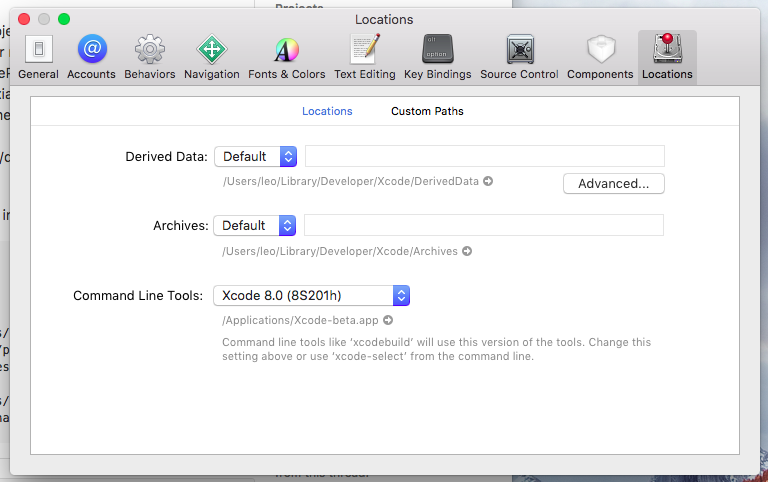

Error Running React Native App From Terminal (iOS)
I am following the tutorial on the official React Native website.
Using the following to build my project:
react-native run-ios
I get the error:
Found Xcode project TestProject.xcodeproj xcrun: error: unable to find utility "instruments", not a developer tool or in PATH Command failed: xcrun instruments -s xcrun: error: unable to find utility "instruments", not a developer tool or in PATH
Although, when I run the app from the .xcodeproj, everything works fine.
Any suggestions?
Answer
Check out this link (Running react-native run-ios occurs an error?). It
appears to be a problem with the location of Command line tools.
In Xcode, select Xcode menu, then Preferences, then Locations tab. Select your Xcode version from the dropdown and exit Xcode.

Suggest
You may need to install or set the location of the Xcode Command Line Tools.
Via command line
If you have Xcode downloaded you can run the following to set the path:
sudo xcode-select -s /Applications/Xcode.app
If the command line tools haven't been installed yet, you may need to run this first:
xcode-select --install
You may need to accept the Xcode license before installing command line tools:
sudo xcodebuild -license accept
Via Xcode
Or adjust the Command Line Tools setting via Xcode (Xcode > Preferences >
Locations):